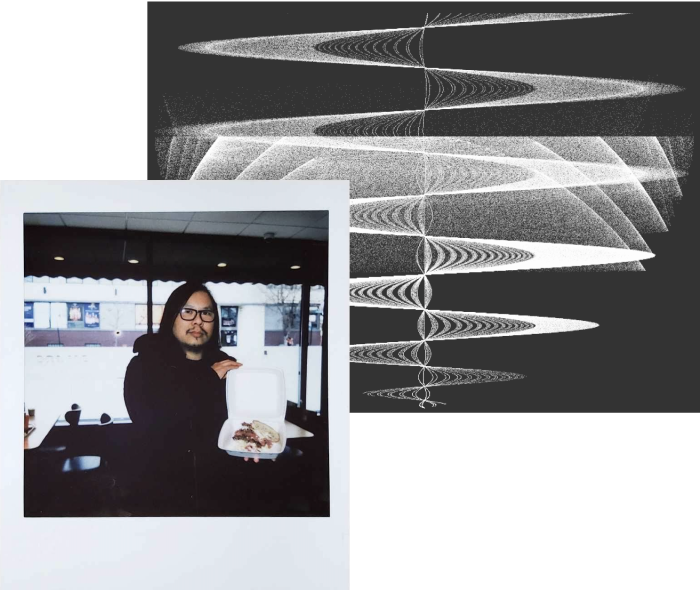

At Login.gov, I dault-hat as Head of Design (Acting) and lead UX for Federation Protocols & Integration Experience. Previously, a product design practice lead at 18F. Thinking about a more accessible, beautiful future for digital public infrastructure is what I do now.
When washing dishes, I think about accessibility in biometrics, risks and care in Security:UX Threat Modeling, and Yasujirō Ozu's film shots.
Near home, I practice Judo, read protocols for fictional systems at pubs, and co-organize a community pantry.